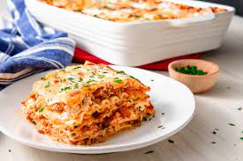

Lasagna is a wide, flat sheet of pasta. Lasagna can refer to either the type of noodle or to the typical lasagna dish which is a dish made with several layers of lasagna sheets with sauce and other ingredients, such as meats and cheese, in between the lasagna noodles.
What is lasagna known for? Lasagna has become one of the crowning glories of the American-Italian dinner table with many layers of pasta, sauce, meat and melted cheese that come together to give your mouth an explosion of flavors. Lasagna is comfort food and it's always good when prepared correctly. Lasagna preparation is not easy.
Cook noodles according to package directions; drain. Meanwhile, in a Dutch oven, cook sausage, beef and onion over medium heat 8-10 minutes or until meat is no longer pink, breaking up meat into crumbles. Add garlic; cook 1 minute. Drain.
Stir in tomatoes, tomato paste, water, sugar, 3 tablespoons parsley, basil, fennel, 1/2 teaspoon salt and pepper; bring to a boil. Reduce heat; simmer, uncovered, 30 minutes, stirring occasionally.
In a small bowl, mix egg, ricotta cheese and remaining 1/4 cup parsley and 1/4 teaspoon salt.
Preheat oven to 375°. Spread 2 cups meat sauce into an ungreased 13x9-in. baking dish. Layer with 3 noodles and a third of the ricotta mixture. Sprinkle with 1 cup mozzarella cheese and 2 tablespoons Parmesan cheese. Repeat layers twice. Top with remaining meat sauce and cheeses (dish will be full).
Bake, covered, 25 minutes. Bake, uncovered, 25 minutes longer or until bubbly. Let stand 15 minutes before serving.